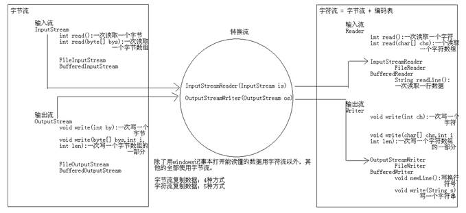

19.28判断一个路径下是否有以.jpg结尾的文件.............................................................. 9
19.29判断一个路径下是否有以.jpg结尾的文件（过滤器）............................................. 9
20.06IO递归输出所有目录下java文件的绝对路径案例................................................. 13
20.08递归删除一个文件夹里面的所有文件................................................................... 18
21.09 IO流的子类简化FileWriter与FileReader............................................................. 27
21.19把ArrayList当中的数据存到文档当中.................................................................. 34
从文档当中读取数据到ArrayList当中.......................................................................... 37
21.23复制单级文件夹里的文件案例............................................................................. 37
获取指定目录下面的指定后缀名文件然后修改名称....................................................... 39
21.28键盘录入学生成绩存到txt当中并且读取出来...................................................... 42
21.29 读取一行字符进行排序的几个方法..................................................................... 44
22.09标准输入输出流与输出语句的本质...................................................................... 55
22.12随机访问流融合InputStream与OutputStream....................................................... 57
22.18_IO流(如何让对象的成员变量不被序列化)........................................................... 63
Properties的概述与作为Map集合的使用...................................................................... 64
22.22判断文件中是否有指定的键如果有就修改值的案例.............................................. 66
22.24IO流的NIO流介绍以及JDK7以下的NIO案例................................................... 68
面试题21.06字符流写数据五种方式的Flush Close区别................................................ 70
* 程序的异常：Throwable
* 严重问题：Error 我们不处理。这种问题一般都是很严重的，比如说内存溢出。
* 问题：Exception;
* 编译期问题:不是RuntimeException的异常 必须进行处理的，因为你不处理，编译就不能通过。
* 运行期问题:RuntimeException 这种问题我们也不处理，因为是你的问题，而且这个问题出现肯定是我们的代码不够严谨，需要修正代码的。
*
* 如何程序出现了问题，我们没有做任何处理，最终jvm会做出默认的处理。
* 把异常的名称，原因及出现的问题等信息输出在控制台。
* 同时会结束程序。
*/
/*
* 我们自己如何处理异常呢?
* A:try...catch...finally
* B:throws 抛出
* try...catch...finally的处理格式：
* try {
* 可能出现问题的代码;
* }catch(异常名 变量) {
* 针对问题的处理;
* }finally {
* 释放资源;
* }
*
* 变形格式：
* try {
* 可能出现问题的代码;
* }catch(异常名 变量) {
* 针对问题的处理;
* }
*
* 注意：
* A:try里面的代码越少越好
* B:catch里面必须有内容，哪怕是给出一个简单的提示
* 注意事项：
* 1:能明确的尽量明确，不要用大的来处理。
* 2:平级关系的异常谁前谁后无所谓，如果出现了子父关系，父必须在后面。
* 注意：
* 一旦try里面出了问题，就会在这里把问题给抛出去，然后和catch里面的问题进行匹配，
* 一旦有匹配的，就执行catch里面的处理，然后结束了try...catch
* 继续执行后面的语句。
*
* JDK7出现了一个新的异常处理方案：
* try{
*
* }catch(异常名1 | 异常名2 | ... 变量 ) {
* ...
* }
* ArithmeticException | ArrayIndexOutOfBoundsException
* 除数不能为0|所音越界
* 注意：这个方法虽然简洁，但是也不够好。
* A:处理方式是一致的。(实际开发中，好多时候可能就是针对同类型的问题，给出同一个处理)
* B:多个异常间必须是平级关系。
*/
/*
* 编译时异常和运行时异常的区别
* 编译期异常：Java程序必须显示处理，否则程序就会发生错误，无法通过编译
* 运行期异常：无需显示处理，也可以和编译时异常一样处理
*/
/*
* 在try里面发现问题后，jvm会帮我们生成一个异常对象，然后把这个对象抛出，和catch里面的类进行匹配。
* 如果该对象是某个类型的，就会执行该catch里面的处理信息。
* 异常中要了解的几个方法：
* public String getMessage():异常的消息字符串
* public String toString():返回异常的简单信息描述
* 此对象的类的 name(全路径名)
* ": "（冒号和一个空格）
* 调用此对象 getLocalizedMessage()方法的结果 (默认返回的是getMessage()的内容)
* printStackTrace() 获取异常类名和异常信息，以及异常出现在程序中的位置。返回值void。把信息输出在控制台。
* printStackTrace(PrintStream s)
* 通常用该方法将异常内容保存在日志文件中，以便查阅。
*/
/*
* 有些时候，我们是可以对异常进行处理的，但是又有些时候，我们根本就没有权限去处理某个异常。
* 或者说，我处理不了，我就不处理了。
* 为了解决出错问题，Java针对这种情况，就提供了另一种处理方案：抛出。
*
* 格式：
* throws 异常类名
* 注意：这个格式必须跟在方法的括号后面。
*
* 注意：
* 尽量不要在main方法上抛出异常。
* 但是我讲课为了方便我就这样做了。
*
* 小结：
* 编译期异常抛出，将来调用者必须处理。也就是调用有throws
* 抛出异常方法的时候，需要在Main方法中进行TryCatch操作
* 运行期异常抛出，将来调用可以不用处理。
* （也就是调用有Throws 排除异常的方法的时候不需要Try Catch）
*/
1.自定义一个异常类、分别继承自Exception 与RunTimeException
/*
* java不可能对所有的情况都考虑到，所以，在实际的开发中，我们可能需要自己定义异常。
* 而我们自己随意的写一个类，是不能作为异常类来看的，要想你的类是一个异常类，就必须继承自Exception或者RuntimeException
*
* 两种方式：
* A:继承Exception
* B:继承RuntimeException
*/
//下面这个是继承编译时异常
public class MyException extends Exception {
public MyException() {
}
public MyException(String message) {
super(message);
}
}
//下面这个是继承自运行时间异常
// public class MyException extends RuntimeException {
//
// }
2.定义一个student类定义一个方法抛出自定义的异常
public class Teacher {
public void check(int score) throws MyException {
if (score > 100 || score < 0) {
throw new MyException("分数必须在0-100之间");
} else {
System.out.println("分数没有问题");
}
}
//
针对MyException继承自RuntimeException 这里不需要上面那样throws MyException
// public void check(int score) {
// if (score > 100 || score < 0) {
// throw new MyException();
// } else {
// System.out.println("分数没有问题");
// }
// }
}
3.接下来进行测试
/*
* 自定义异常测试类
*/
public class StudentDemo {
public static void main(String[] args) {//这里要么在方法后面Throws要么try catch
Scanner sc = new Scanner(System.in);
System.out.println("请输入学生成绩：");
int score = sc.nextInt();
Teacher t = new Teacher();
try {
t.check(score);
} catch (MyException e) {
e.printStackTrace();
}
}
}
/*
* 异常注意事项:
* A:子类重写父类方法时，子类的方法必须抛出相同的异常或父类异常的子类。(父亲坏了,儿子不能比父亲更坏)
* B:如果父类抛出了多个异常,子类重写父类时,只能抛出相同的异常或者是他的子集,子类不能抛出父类没有的异常
* C:如果被重写的方法没有异常抛出,那么子类的方法绝对不可以抛出异常,如果子类方法内有异常发生,那么子类只能try,不能throws
* @Override//重写
public void show() throws ArithmeticException {
}
*/
import java.io.File;
import java.io.IOException;
/*
*创建功能：
*public boolean createNewFile():创建文件 如果存在这样的文件，就不创建了
*public boolean mkdir():创建文件夹 如果存在这样的文件夹，就不创建了
*public boolean mkdirs():创建文件夹,如果父文件夹不存在，会帮你创建出来
*
*骑白马的不一定是王子，可能是班长。
*注意：你到底要创建文件还是文件夹，你最清楚，方法不要调错了。
*/
/*
* 删除功能:public boolean delete()
*
* 注意：
* A:如果你创建文件或者文件夹忘了写盘符路径，那么，默认在项目路径下。
* B:Java中的删除不走回收站。
* C:要删除一个文件夹，请注意该文件夹内不能包含文件或者文件夹
*/
/*
* 重命名功能:public boolean renameTo(File dest)
* 如果路径名相同，就是改名。
* 如果路径名不同，就是改名并剪切。
*
* 路径以盘符开始：绝对路径 c:\\a.txt
* 路径不以盘符开始：相对路径 a.txt
*/
* 判断功能:
* public boolean isDirectory():判断是否是目录
* public boolean isFile():判断是否是文件
* public boolean exists():判断是否存在
* public boolean canRead():判断是否可读
* public boolean canWrite():判断是否可写
* public boolean isHidden():判断是否隐藏
/*import java.io.File;
* 获取功能：
* public String[] list():获取指定目录下的所有文件或者文件夹的名称数组
* public File[] listFiles():获取指定目录下的所有文件或者文件夹的File数组
*/
public class FileDemo {
public static void main(String[] args) {
// 指定一个目录
File file = new File("e:\\");
// public String[] list():获取指定目录下的所有文件或者文件夹的名称数组
String[] strArray = file.list();
for (String s : strArray) {
System.out.println(s);
}
System.out.println("------------");
// public File[] listFiles():获取指定目录下的所有文件或者文件夹的File数组
File[] fileArray = file.listFiles();
for (File f : fileArray) {
System.out.println(f.getName());
}
}
}
import java.io.File;
/*
* 判断E盘目录下是否有后缀名为.jpg的文件，如果有，就输出此文件名称
*
* 分析：
* A:封装e判断目录
* B:获取该目录下所有文件或者文件夹的File数组
* C:遍历该File数组，得到每一个File对象，然后判断
* D:是否是文件
* 是：继续判断是否以.jpg结尾
* 是：就输出该文件名称
* 否：不搭理它
* 否：不搭理它
*/
public class FileDemo {
public static void main(String[] args) {
// 封装e判断目录
File file = new File("e:\\");
// 获取该目录下所有文件或者文件夹的File数组
File[] fileArray = file.listFiles();
// 遍历该File数组，得到每一个File对象，然后判断
for (File f : fileArray) {
// 是否是文件
if (f.isFile()) {
// 继续判断是否以.jpg结尾
if (f.getName().endsWith(".jpg")) {
// 就输出该文件名称
System.out.println(f.getName());
}
}
}
}
}
import java.io.File;
import java.io.FilenameFilter;
/*
* 判断E盘目录下是否有后缀名为.jpg的文件，如果有，就输出此文件名称
* A:先获取所有的，然后遍历的时候，依次判断，如果满足条件就输出。
* B:获取的时候就已经是满足条件的了，然后输出即可。
*
* 要想实现这个效果，就必须学习一个接口：文件名称过滤器
* public String[] list(FilenameFilter filter)
* public File[] listFiles(FilenameFilter filter)
*/
public class FileDemo2 {
public static void main(String[] args) {
// 封装e判断目录
File file = new File("e:\\");
// 获取该目录下所有文件或者文件夹的String数组
// public String[] list(FilenameFilter filter)
String[] strArray = file.list(new FilenameFilter() {
@Override
public boolean accept(File dir, String name) {
// return false;
// return true;
// 通过这个测试，我们就知道了，到底把这个文件或者文件夹的名称加不加到数组中，取决于这里的返回值是true还是false
// 所以，这个的true或者false应该是我们通过某种判断得到的
// System.out.println(dir + "---" + name);
// File file = new File(dir, name);
// // System.out.println(file);
// boolean flag = file.isFile();
// boolean flag2 = name.endsWith(".jpg");
// return flag && flag2;
//下面是一句话写出
return new File(dir, name).isFile() && name.endsWith(".jpg");
}
});
// 遍历
for (String s : strArray) {
System.out.println(s);
}
}
}
import java.io.File;
/*
* 需求：把E:\评书\三国演义下面的视频名称修改为
* 00?_介绍.avi
*
* 思路：
* A:封装目录
* B:获取该目录下所有的文件的File数组
* C:遍历该File数组，得到每一个File对象
* D:拼接一个新的名称，然后重命名即可。
*/
public class FileDemo {
public static void main(String[] args) {
// 封装目录
File srcFolder = new File("E:\\评书\\三国演义");
// 获取该目录下所有的文件的File数组
File[] fileArray = srcFolder.listFiles();
// 遍历该File数组，得到每一个File对象
for (File file : fileArray) {
// System.out.println(file);
// E:\评书\三国演义\三国演义_001_[评书网-今天很高兴,明天就IO了]_桃园三结义.avi
// 改后：E:\评书\三国演义\001_桃园三结义.avi
String name = file.getName(); // 三国演义_001_[评书网-今天很高兴,明天就IO了]_桃园三结义.avi
int index = name.indexOf("_");
String numberString = name.substring(index + 1, index + 4);
// System.out.println(numberString);
// int startIndex = name.lastIndexOf('_');
// int endIndex = name.lastIndexOf('.');
// String nameString = name.substring(startIndex + 1, endIndex);
// System.out.println(nameString);
int endIndex = name.lastIndexOf('_');
String nameString = name.substring(endIndex);
String newName = numberString.concat(nameString); // 001_桃园三结义.avi
// System.out.println(newName);
File newFile = new File(srcFolder, newName); // E:\\评书\\三国演义\\001_桃园三结义.avi
// 重命名即可
file.renameTo(newFile);
}
}
}
案例不死神兔
/*
* 有一对兔子，从出生后第3个月起每个月都生一对兔子，小兔子长到第三个月后每个月又生一对兔子，假如兔子都不死，问第二十个月的兔子对数为多少？
* 分析：我们要想办法找规律
* 兔子对数
* 第一个月： 1
* 第二个月： 1
* 第三个月： 2
* 第四个月： 3
* 第五个月： 5
* 第六个月： 8
* ...
*
* 由此可见兔子对象的数据是：
* 1,1,2,3,5,8...
* 规则：
* A:从第三项开始，每一项是前两项之和
* B:而且说明前两项是已知的
*
* 如何实现这个程序呢?
* A:数组实现
* B:变量的变化实现
* C:递归实现
*
* 假如相邻的两个月的兔子对数是a,b
* 第一个相邻的数据：a=1,b=1
* 第二个相邻的数据：a=1,b=2
* 第三个相邻的数据：a=2,b=3
* 第四个相邻的数据：a=3,b=5
* 看到了：下一次的a是以前的b，下一次的b是以前的a+b
*/
public class DiGuiDemo2 {
public static void main(String[] args) {
// 定义一个数组
int[] arr = new int[20];
arr[0] = 1;
arr[1] = 1;
// arr[2] = arr[0] + arr[1];
// arr[3] = arr[1] + arr[2];
// ...
for (int x = 2; x < arr.length; x++) {
arr[x] = arr[x - 2] + arr[x - 1];
}
System.out.println(arr[19]);// 6765
System.out.println("----------------");
int a = 1;
int b = 1;
for (int x = 0; x < 18; x++) {
// 临时变量存储上一次的a
int temp = a;
a = b;
b = temp + b;
}
System.out.println(b);
System.out.println("----------------");
System.out.println(fib(20));
}
/*
* 方法： 返回值类型：int 参数列表：int n 出口条件： 第一个月是1，第二个月是1 规律： 从第三个月开始，每一个月是前两个月之和
*/
public static int fib(int n) {
if (n == 1 || n == 2) {
return 1;
} else {
return fib(n - 1) + fib(n - 2);
}
}
}
例子
import java.io.File;
/*
* 需求：请大家把E:\JavaSE目录下所有的java结尾的文件的绝对路径给输出在控制台。
*
* 分析：
* A:封装目录
* B:获取该目录下所有的文件或者文件夹的File数组
* C:遍历该File数组，得到每一个File对象
* D:判断该File对象是否是文件夹
* 是：回到B
* 否：继续判断是否以.java结尾
* 是：就输出该文件的绝对路径
* 否：不搭理它
*/
public class FilePathDemo {
public static void main(String[] args) {
// 封装目录
File srcFolder = new File("E:\\JavaSE");
// 递归功能实现
getAllJavaFilePaths(srcFolder);
}
private static void getAllJavaFilePaths(File srcFolder) {
// 获取该目录下所有的文件或者文件夹的File数组
File[] fileArray = srcFolder.listFiles();
// 遍历该File数组，得到每一个File对象
for (File file : fileArray) {
// 判断该File对象是否是文件夹
if (file.isDirectory()) {
getAllJavaFilePaths(file);
} else {
// 继续判断是否以.java结尾
if (file.getName().endsWith(".java")) {
// 就输出该文件的绝对路径
System.out.println(file.getAbsolutePath());
}
}
}
}
}
概述
/*
* IO流的分类：
* 流向：
* 输入流 读取数据
* 输出流 写出数据
* 数据类型：
* 字节流
* 字节输入流 读取数据 InputStream
* 字节输出流 写出数据 OutputStream
* 字符流
* 字符输入流 读取数据 Reader
* 字符输出流 写出数据 Writer
*
* 注意：一般我们在探讨IO流的时候，如果没有明确说明按哪种分类来说，默认情况下是按照数据类型来分的。
*
* 需求：我要往一个文本文件中输入一句话："hello,io"
*
* 分析：
* A:这个操作最好是采用字符流来做，但是呢，字符流是在字节流之后才出现的，所以，今天我先讲解字节流如何操作。
* B:由于我是要往文件中写一句话，所以我们要采用字节输出流。
*
* 通过上面的分析后我们知道要使用：OutputStream
* 但是通过查看API，我们发现该流对象是一个抽象类，不能实例化。
* 所以，我们要找一个具体的子类。
* 而我们要找的子类是什么名字的呢?这个时候，很简单，我们回想一下，我们是不是要往文件中写东西。
* 文件是哪个单词：File
* 然后用的是字节输出流，联起来就是：FileOutputStream
* 注意：每种基类的子类都是以父类名作为后缀名。
* XxxOutputStream
* XxxInputStream
* XxxReader
* XxxWriter
* 查看FileOutputStream的构造方法：
* FileOutputStream(File file)
* FileOutputStream(String name)
*
* 字节输出流操作步骤：
* A:创建字节输出流对象
* B:写数据
* C:释放资源
*/
//释放资源
//关闭此文件输出流并释放与此流有关的所有系统资源。
fos.close();
/*
* 为什么一定要close()呢?
* A:让流对象变成垃圾，这样就可以被垃圾回收器回收了
* B:通知系统去释放跟该文件相关的资源
*/
解析
/*
* 如何实现数据的换行?
* 为什么现在没有换行呢?因为你值写了字节数据，并没有写入换行符号。
* 如何实现呢?写入换行符号即可呗。
* 刚才我们看到了有写文本文件打开是可以的，通过windows自带的那个不行，为什么呢?
* 因为不同的系统针对不同的换行符号识别是不一样的?
* windows:\r\n
* linux:\n
* Mac:\r
* 而一些常见的个高级记事本，是可以识别任意换行符号的。
*
* 如何实现数据的追加写入?
* 用构造方法带第二个参数是true的情况即可
*/
最终代码 // 改进版
// 为了在finally里面能够看到该对象就必须定义到外面，为了访问不出问题，还必须给初始化值
FileOutputStream fos = null;
try {
// fos = new FileOutputStream("z:\\fos4.txt");
fos = new FileOutputStream("fos4.txt");
fos.write("java".getBytes());
} catch (FileNotFoundException e) {
e.printStackTrace();
} catch (IOException e) {
e.printStackTrace();
} finally {
// 如果fos不是null，才需要close()
if (fos != null) {
// 为了保证close()一定会执行，就放到这里了
try {
fos.close();
} catch (IOException e) {
e.printStackTrace();
}
}
}
代码如下
import java.io.FileInputStream;
import java.io.FileOutputStream;
import java.io.IOException;
/*
* 复制文本文件。
*
* 数据源：从哪里来
* a.txt -- 读取数据 -- FileInputStream
*
* 目的地：到哪里去
* b.txt -- 写数据 -- FileOutputStream
*
* java.io.FileNotFoundException: a.txt (系统找不到指定的文件。)
*
* 这一次复制中文没有出现任何问题，为什么呢?
* 上一次我们出现问题的原因在于我们每次获取到一个字节数据，就把该字节数据转换为了字符数据，然后输出到控制台。
* 而这一次呢?确实通过IO流读取数据，写到文本文件，你读取一个字节，我就写入一个字节，你没有做任何的转换。
* 它会自己做转换。
*/
public class CopyFileDemo {
public static void main(String[] args) throws IOException {
// 封装数据源
FileInputStream fis = new FileInputStream("a.txt");
// 封装目的地
FileOutputStream fos = new FileOutputStream("b.txt");
int by = 0;
while ((by = fis.read()) != -1) {
fos.write(by);
}
// 释放资源(先关谁都行)
fos.close();
fis.close();
}
}
案例
mport java.util.Arrays;
/*
* 计算机是如何识别什么时候该把两个字节转换为一个中文呢?
* 在计算机中中文的存储分两个字节：
* 第一个字节肯定是负数。
* 第二个字节常见的是负数，可能有正数。但是没影响。
*/
public class StringDemo {
public static void main(String[] args) {
// String s = "abcde";
// // [97, 98, 99, 100, 101]
String s = "我爱你中国";
// [-50, -46, -80, -82, -60, -29, -42, -48, -71, -6]
byte[] bys = s.getBytes();
System.out.println(Arrays.toString(bys));
}
}
代码
import java.io.FileInputStream;
import java.io.FileOutputStream;
import java.io.IOException;
/*
* 需求：把c盘下的a.txt的内容复制到d盘下的b.txt中
*
* 数据源：
* c:\\a.txt -- 读取数据-- FileInputStream
* 目的地：
* d:\\b.txt -- 写出数据 -- FileOutputStream
*/
public class CopyFileDemo2 {
public static void main(String[] args) throws IOException {
// 封装数据源
FileInputStream fis = new FileInputStream("c:\\a.txt");
// 封装目的地
FileOutputStream fos = new FileOutputStream("d:\\b.txt");
// 复制数据
int by = 0;
while ((by = fis.read()) != -1) {
fos.write(by);
}
// 释放资源
fos.close();
fis.close();
}
}
案例：如下
import java.io.File;
/*
* 需求：递归删除带内容的目录
*
* 目录我已经给定：demo
*
* 分析：
* A:封装目录
* B:获取该目录下的所有文件或者文件夹的File数组
* C:遍历该File数组，得到每一个File对象
* D:判断该File对象是否是文件夹
* 是：回到B
* 否：就删除
*/
public class FileDeleteDemo {
public static void main(String[] args) {
// 封装目录
File srcFolder = new File("demo");
// 递归实现
deleteFolder(srcFolder);
}
private static void deleteFolder(File srcFolder) {
// 获取该目录下的所有文件或者文件夹的File数组
File[] fileArray = srcFolder.listFiles();
if (fileArray != null) {
// 遍历该File数组，得到每一个File对象
for (File file : fileArray) {
// 判断该File对象是否是文件夹
if (file.isDirectory()) {
deleteFolder(file);
} else {
System.out.println(file.getName() + "---" + file.delete());//这个返回值file.delete() 返回的是这个文件或者文件夹是否删除成功
}
}
System.out.println(srcFolder.getName() + "---" + srcFolder.delete());
}
}
}
20.20字节流复制图片
案例代码
20.21 进行图片的复制、视频的复制方法都一样 只不过路径变化一下
但是效率太低所以要读数组代码如下
代码案例
/*
* 一次读取一个字节数组：int read(byte[] b)
* 返回值其实是实际读取的字节个数。
*
* FileInputStream fis = new FileInputStream("FileOutputStreamDemo.java");
// 最终版代码
// 数组的长度一般是1024或者1024的整数倍
byte[] bys = new byte[1024];
int len = 0;
while ((len = fis.read(bys)) != -1) {
System.out.print(new String(bys, 0, len));
}
// 释放资源
fis.close();
*/
案例：
/*
* 需求：把c:\\a.txt内容复制到d:\\b.txt中
*
* 数据源：
* c:\\a.txt -- 读取数据 -- FileInputStream
* 目的地：
* d:\\b.txt -- 写出数据 -- FileOutputStream
*/
public class CopyFileDemo {
public static void main(String[] args) throws IOException {
// 封装数据源
FileInputStream fis = new FileInputStream("c:\\a.txt");
FileOutputStream fos = new FileOutputStream("d:\\b.txt");
// 复制数据
byte[] bys = new byte[1024];
int len = 0;
while ((len = fis.read(bys)) != -1) {
fos.write(bys, 0, len);
}
// 释放资源
fos.close();
fis.close();
}
}
试列
/*
* 通过定义数组的方式确实比以前一次读取一个字节的方式快很多，所以，看来有一个缓冲区还是非常好的。
* 既然是这样的话，那么，java开始在设计的时候，它也考虑到了这个问题，就专门提供了带缓冲区的字节类。
* 这种类被称为：缓冲区类(高效类)
* 写数据：BufferedOutputStream
* // 简单写法
BufferedOutputStream bos = new BufferedOutputStream(
new FileOutputStream("bos.txt"));
// 写数据
bos.write("hello".getBytes());
* 读数据：BufferedInputStream
*
* BufferedInputStream bis = new BufferedInputStream(new FileInputStream(
"bos.txt"));
* 注意：虽然我们有两种方式可以读取，但是，请注意，这两种方式针对同一个对象在一个代码中只能使用一个。
*
* 构造方法可以指定缓冲区的大小，但是我们一般用不上，因为默认缓冲区大小就足够了。
*
* 为什么不传递一个具体的文件或者文件路径，而是传递一个OutputStream对象呢?
* 原因很简单，字节缓冲区流仅仅提供缓冲区，为高效而设计的。但是呢，真正的读写操作还得靠基本的流对象实现。
*/
代码如下
import java.io.BufferedInputStream;
import java.io.BufferedOutputStream;
import java.io.FileInputStream;
import java.io.FileOutputStream;
import java.io.IOException;
/*
* 需求：把e:\\哥有老婆.mp4复制到当前项目目录下的copy.mp4中
*
* 字节流四种方式复制文件：
* 基本字节流一次读写一个字节： 共耗时：117235毫秒
* 基本字节流一次读写一个字节数组： 共耗时：156毫秒
* 高效字节流一次读写一个字节： 共耗时：1141毫秒
* 高效字节流一次读写一个字节数组： 共耗时：47毫秒
*/
public class CopyMp4Demo {
public static void main(String[] args) throws IOException {
long start = System.currentTimeMillis();
// method1("e:\\哥有老婆.mp4", "copy1.mp4");
// method2("e:\\哥有老婆.mp4", "copy2.mp4");
// method3("e:\\哥有老婆.mp4", "copy3.mp4");
method4("e:\\哥有老婆.mp4", "copy4.mp4");
long end = System.currentTimeMillis();
System.out.println("共耗时：" + (end - start) + "毫秒");
}
// 高效字节流一次读写一个字节数组：
public static void method4(String srcString, String destString)
throws IOException {
BufferedInputStream bis = new BufferedInputStream(new FileInputStream(
srcString));
BufferedOutputStream bos = new BufferedOutputStream(
new FileOutputStream(destString));
byte[] bys = new byte[1024];
int len = 0;
while ((len = bis.read(bys)) != -1) {
bos.write(bys, 0, len);
}
bos.close();
bis.close();
}
// 高效字节流一次读写一个字节：
public static void method3(String srcString, String destString)
throws IOException {
BufferedInputStream bis = new BufferedInputStream(new FileInputStream(
srcString));
BufferedOutputStream bos = new BufferedOutputStream(
new FileOutputStream(destString));
int by = 0;
while ((by = bis.read()) != -1) {
bos.write(by);
}
bos.close();
bis.close();
}
// 基本字节流一次读写一个字节数组
public static void method2(String srcString, String destString)
throws IOException {
FileInputStream fis = new FileInputStream(srcString);
FileOutputStream fos = new FileOutputStream(destString);
byte[] bys = new byte[1024];
int len = 0;
while ((len = fis.read(bys)) != -1) {
fos.write(bys, 0, len);
}
fos.close();
fis.close();
}
// 基本字节流一次读写一个字节
public static void method1(String srcString, String destString)
throws IOException {
FileInputStream fis = new FileInputStream(srcString);
FileOutputStream fos = new FileOutputStream(destString);
int by = 0;
while ((by = fis.read()) != -1) {
fos.write(by);
}
fos.close();
fis.close();
}
}
常见编码表：
计算机只能识别二进制数据，早期由来是电信号。
为了方便应用计算机，让它可以识别各个国家的文字。
就将各个国家的文字用数字来表示，并一一对应，形成一张表。
ASCII：美国标准信息交换码。
用一个字节的7位可以表示。
ISO8859-1：拉丁码表。欧洲码表
用一个字节的8位表示。
GB2312：中国的中文编码表。
GBK：中国的中文编码表升级，融合了更多的中文文字符号。
GB18030：GBK的取代版本
BIG-5码 ：通行于台湾、香港地区的一个繁体字编码方案，俗称“大五码”。
Unicode：国际标准码，融合了多种文字。
所有文字都用两个字节来表示,Java语言使用的就是unicode
UTF-8：最多用三个字节来表示一个字符。
UTF-8不同，它定义了一种“区间规则”，这种规则可以和ASCII编码保持最大程度的兼容：
它将Unicode编码为00000000-0000007F的字符，用单个字节来表示
它将Unicode编码为00000080-000007FF的字符用两个字节表示
它将Unicode编码为00000800-0000FFFF的字符用3字节表示
记录：如下
*
*import java.io.UnsupportedEncodingException;
*import java.util.Arrays;
* String(byte[] bytes, String charsetName):通过指定的字符集解码字节数组
* byte[] getBytes(String charsetName):使用指定的字符集合把字符串编码为字节数组
*
* 编码:把看得懂的变成看不懂的
* String -- byte[]
*
* 解码:把看不懂的变成看得懂的
* byte[] -- String
public class StringDemo {
public
static void main(String[] args) throws UnsupportedEncodingException {
String s = "你好";
// String -- byte[]
byte[] bys = s.getBytes(); // [-60,
-29, -70, -61]
// byte[] bys =
s.getBytes("GBK");// [-60, -29, -70, -61]
// byte[] bys =
s.getBytes("UTF-8");// [-28, -67, -96, -27, -91, -67]
System.out.println(Arrays.toString(bys));
// byte[] -- String
String ss = new String(bys); // 你好
// String ss = new String(bys,
"GBK"); // 你好
// String ss = new String(bys,
"UTF-8"); // ???
System.out.println(ss);
}
}
如下：介绍
import java.io.FileOutputStream;
import java.io.IOException;
import java.io.OutputStreamWriter;
/*
* OutputStreamWriter(OutputStream out):根据默认编码把字节流的数据转换为字符流
* OutputStreamWriter(OutputStream out,String
charsetName):根据指定编码把字节流数据转换为字符流
* 把字节流转换为字符流。
* 字符流 = 字节流 +编码表。
*/
public class
OutputStreamWriterDemo {
public
static void main(String[] args) throws IOException {
// 创建对象
// OutputStreamWriter osw = new
OutputStreamWriter(new FileOutputStream(
// "osw.txt")); // 默认GBK
// OutputStreamWriter osw = new
OutputStreamWriter(new FileOutputStream(
// "osw.txt"), "GBK");
// 指定GBK
OutputStreamWriter osw = new
OutputStreamWriter(new FileOutputStream(
"osw.txt"),
"UTF-8"); // 指定UTF-8
// 写数据
osw.write("中国");
// 释放资源
osw.close();
}
}
介绍：记录
/*
*
throws IOException //注意抛出异常
* InputStreamReader(InputStream is):用默认的编码读取数据
* InputStreamReader(InputStream is,String
charsetName):用指定的编码读取数据
* InputStreamReader isr = new
InputStreamReader(new FileInputStream(
"osw.txt"),
"UTF-8");
// 读取数据
// 一次读取一个字符
int ch = 0;
while ((ch = isr.read()) != -1) {
System.out.print((char)
ch);
}
*/
如下：记录
import java.io.FileOutputStream;
import java.io.IOException;
import
java.io.OutputStreamWriter;
/*
* OutputStreamWriter的方法：
* public void write(int c):写一个字符
* public void write(char[] cbuf):写一个字符数组
* public void write(char[] cbuf,int off,int
len):写一个字符数组的一部分
* public void write(String str):写一个字符串
* public void write(String str,int off,int
len):写一个字符串的一部分
*
* 面试题：close()和flush()的区别?
* A:close()关闭流对象，但是先刷新一次缓冲区。关闭之后，流对象不可以继续再使用了。
* B:flush()仅仅刷新缓冲区,刷新之后，流对象还可以继续使用。
*/
public class OutputStreamWriterDemo {
public static void main(String[] args) throws IOException {
// 创建对象
OutputStreamWriter osw = new OutputStreamWriter(new FileOutputStream(
"osw2.txt"));
// 写数据
// public void write(int c):写一个字符
// osw.write('a');
// osw.write(97);
// 为什么数据没有进去呢?
// 原因是：字符 = 2字节
// 文件中数据存储的基本单位是字节。
// void flush()
// public void write(char[] cbuf):写一个字符数组
// char[] chs = {'a','b','c','d','e'};
// osw.write(chs);
// public void write(char[] cbuf,int off,int len):写一个字符数组的一部分
// osw.write(chs,1,3);
// public void write(String str):写一个字符串
// osw.write("我爱林青霞");
// public void write(String str,int off,int len):写一个字符串的一部分
osw.write("我爱林青霞", 2, 3);
// 刷新缓冲区
osw.flush();
// osw.write("我爱林青霞", 2, 3);
// 释放资源
osw.close();
// java.io.IOException: Stream closed
// osw.write("我爱林青霞", 2, 3);
}
}
介绍用法如下：如
/*
* import java.io.FileReader;
* import java.io.FileWriter;
* import java.io.IOException;
*
* 由于我们常见的操作都是使用本地默认编码，所以，不用指定编码。
* 而转换流的名称有点长，所以，Java就提供了其子类供我们使用。
* OutputStreamWriter = FileOutputStream + 编码表(GBK)
* FileWriter = FileOutputStream + 编码表(GBK)
*
* InputStreamReader = FileInputStream + 编码表(GBK)
* FileReader = FileInputStream + 编码表(GBK)
*
/*
* 需求：把当前项目目录下的a.txt内容复制到当前项目目录下的b.txt中
*
* 数据源：
* a.txt -- 读取数据 -- 字符转换流 --
InputStreamReader -- FileReader
* 目的地：
* b.txt -- 写出数据 -- 字符转换流 --
OutputStreamWriter -- FileWriter
* FileWriter fw = new
FileWriter("b.txt",true);
*/
使用如下：如
import java.io.BufferedWriter;
import java.io.FileWriter;
import java.io.IOException;
/*
* 字符流为了高效读写，也提供了对应的字符缓冲流。
*
BufferedWriter:字符缓冲输出流
*
BufferedReader:字符缓冲输入流
*
*
BufferedWriter:字符缓冲输出流
* 将文本写入字符输出流，缓冲各个字符，从而提供单个字符、数组和字符串的高效写入。
* 可以指定缓冲区的大小，或者接受默认的大小。在大多数情况下，默认值就足够大了。
*/
public class BufferedWriterDemo {
public
static void main(String[] args) throws IOException {
// BufferedWriter(Writer out)
// BufferedWriter bw = new
BufferedWriter(new OutputStreamWriter(
// new
FileOutputStream("bw.txt")));
BufferedWriter bw = new
BufferedWriter(new FileWriter("bw.txt"));
bw.write("hello");
bw.write("world");
bw.write("java");
bw.flush();
bw.close();
}
}
简介如下：如
import java.io.BufferedReader;
import java.io.FileReader;
import java.io.IOException;
/*
*
BufferedReader
* 从字符输入流中读取文本，缓冲各个字符，从而实现字符、数组和行的高效读取。
* 可以指定缓冲区的大小，或者可使用默认的大小。大多数情况下，默认值就足够大了。
*
*
BufferedReader(Reader in)
*/
public class BufferedReaderDemo {
public
static void main(String[] args) throws IOException {
// 创建字符缓冲输入流对象
BufferedReader br = new
BufferedReader(new FileReader("bw.txt"));
// 方式1
// int ch = 0;
// while ((ch = br.read()) != -1) {
// System.out.print((char) ch);
// }
// 方式2
char[] chs = new char[1024];
int len = 0;
while ((len = br.read(chs)) != -1) {
System.out.print(new
String(chs, 0, len));
}
// 释放资源
br.close();
}
}
简介：如/*
* 字符缓冲流的特殊方法：
*
BufferedWriter:
* public
void newLine():根据系统来决定换行符
*
BufferedReader:
* public
String readLine()：一次读取一行数据
* 包含该行内容的字符串，不包含任何行终止符，如果已到达流末尾，则返回
null
*/
一个复制文本案例：如public class CopyFileDemo2 {
public
static void main(String[] args) throws IOException {
// 封装数据源
BufferedReader br = new
BufferedReader(new FileReader("a.txt"));
// 封装目的地
BufferedWriter bw = new
BufferedWriter(new FileWriter("b.txt"));
// 读写数据
String line = null;
while ((line = br.readLine()) !=
null) {
bw.write(line);
bw.newLine();
bw.flush();
}
// 释放资源
bw.close();
br.close();
}
}

介绍：代码如
import java.io.BufferedReader;
import java.io.BufferedWriter;
import java.io.FileReader;
import java.io.FileWriter;
import java.io.IOException;
public class BufferCopyDemo_02 {
public
static void main(String[] args) throws IOException{
String
srcString="OutputStreamWriterDemo.java";
String destString="b.txt";
method_01(srcString,destString);//方法1所用时间32毫秒
method_02(srcString,destString);//方法2所用时间2毫秒
method_03(srcString,destString);//方法3所用时间6毫秒
method_04(srcString,destString);//方法4所用时间2毫秒
method_05(srcString,destString);//方法5所用时间14毫秒
}
private
static void method_05(String srcString, String destString)throws IOException {
long a=System.currentTimeMillis();
// TODO Auto-generated method stub
BufferedWriter bw=new
BufferedWriter(new FileWriter(destString));
BufferedReader br=new
BufferedReader(new FileReader(srcString));
String line=null;
while((line=br.readLine())!=null){
bw.write(line);
bw.newLine();
bw.flush();
}
bw.close();
br.close();
long b=System.currentTimeMillis();
System.out.println("方法5所用时间"+(b-a)+"毫秒");
}
private
static void method_04(String srcString, String destString)throws IOException {
long a=System.currentTimeMillis();
BufferedWriter bw=new
BufferedWriter(new FileWriter(destString));
BufferedReader br=new
BufferedReader(new FileReader(srcString));
char [] chs=new char[1024];
int len=0;
while((len=br.read(chs))!=-1){
bw.write(chs,0,len);
}
bw.close();
br.close();
long b=System.currentTimeMillis();
System.out.println("方法4所用时间"+(b-a)+"毫秒");
}
private
static void method_03(String srcString, String destString) throws IOException{
long a=System.currentTimeMillis();
BufferedWriter bw=new
BufferedWriter(new FileWriter(destString));
BufferedReader br=new
BufferedReader(new FileReader(srcString));
int ch=0;
while((ch=br.read())!=-1){
bw.write(ch);
//bw.flush();
}
bw.close();
br.close();
long b=System.currentTimeMillis();
System.out.println("方法3所用时间"+(b-a)+"毫秒");//
TODO Auto-generated method stub
}
private
static void method_02(String srcString, String destString)throws IOException {
long a=System.currentTimeMillis();
// TODO Auto-generated method stub
FileWriter fw=new
FileWriter(destString);
FileReader fr=new
FileReader(srcString);
char [] chs=new char[1024];
int len=0;
while((len=fr.read(chs))!=-1){
fw.write(chs,0,len);
}
fw.close();
fr.close();
long b=System.currentTimeMillis();
System.out.println("方法2所用时间"+(b-a)+"毫秒");//
TODO Auto-generated method stub
}
private
static void method_01(String srcString, String destString) throws IOException {
long a=System.currentTimeMillis();
// TODO Auto-generated method stub
FileWriter fw=new
FileWriter(destString);
FileReader fr=new
FileReader(srcString);
int ch;
while((ch=fr.read())!=-1){
fw.write(ch);
}
fw.close();
fr.close();
long b=System.currentTimeMillis();
System.out.println("方法1所用时间"+(b-a)+"毫秒");//
TODO Auto-generated method stub
}
}
案例代码：如下
import
java.io.BufferedInputStream;
import
java.io.BufferedOutputStream;
import java.io.File;
import java.io.FileInputStream;
import java.io.FileOutputStream;
import java.io.IOException;
/*
* 复制图片
*
* 分析：
* 复制数据，如果我们知道用记事本打开并能够读懂，就用字符流，否则用字节流。
* 通过该原理，我们知道我们应该采用字节流。
* 而字节流有4种方式，所以做这个题目我们有4种方式。推荐掌握第4种。
*
* 数据源：
* c:\\a.jpg -- FileInputStream --
BufferedInputStream
* 目的地：
* d:\\b.jpg -- FileOutputStream --
BufferedOutputStream
*/
public class CopyImageDemo {
public
static void main(String[] args) throws IOException {
// 使用字符串作为路径
// String srcString =
"c:\\a.jpg";
// String destString =
"d:\\b.jpg";
// 使用File对象做为参数
File srcFile = new
File("c:\\a.jpg");
File destFile = new
File("d:\\b.jpg");
// method1(srcFile, destFile);
// method2(srcFile, destFile);
// method3(srcFile, destFile);
method4(srcFile, destFile);
}
//
字节缓冲流一次读写一个字节数组
private
static void method4(File srcFile, File destFile) throws IOException {
BufferedInputStream bis = new
BufferedInputStream(new FileInputStream(
srcFile));
BufferedOutputStream bos = new
BufferedOutputStream(
new FileOutputStream(destFile));
byte[] bys = new byte[1024];
int len = 0;
while ((len = bis.read(bys)) != -1)
{
bos.write(bys,
0, len);
}
bos.close();
bis.close();
}
//
字节缓冲流一次读写一个字节
private
static void method3(File srcFile, File destFile) throws IOException {
BufferedInputStream bis = new
BufferedInputStream(new FileInputStream(
srcFile));
BufferedOutputStream bos = new
BufferedOutputStream(
new FileOutputStream(destFile));
int by = 0;
while ((by = bis.read()) != -1) {
bos.write(by);
}
bos.close();
bis.close();
}
//
基本字节流一次读写一个字节数组
private
static void method2(File srcFile, File destFile) throws IOException {
FileInputStream fis = new
FileInputStream(srcFile);
FileOutputStream fos = new
FileOutputStream(destFile);
byte[] bys = new byte[1024];
int len = 0;
while ((len = fis.read(bys)) != -1)
{
fos.write(bys,
0, len);
}
fos.close();
fis.close();
}
//
基本字节流一次读写一个字节
private
static void method1(File srcFile, File destFile) throws IOException {
FileInputStream fis = new
FileInputStream(srcFile);
FileOutputStream fos = new
FileOutputStream(destFile);
int by = 0;
while ((by = fis.read()) != -1) {
fos.write(by);
}
fos.close();
fis.close();
}
}
案例代码：如下
import java.io.BufferedInputStream;
import java.io.BufferedOutputStream;
import java.io.File;
import java.io.FileInputStream;
import java.io.FileOutputStream;
import java.io.IOException;
/*
* 复制图片
*
* 分析：
* 复制数据，如果我们知道用记事本打开并能够读懂，就用字符流，否则用字节流。
* 通过该原理，我们知道我们应该采用字节流。
* 而字节流有4种方式，所以做这个题目我们有4种方式。推荐掌握第4种。
*
* 数据源：
* c:\\a.jpg
-- FileInputStream -- BufferedInputStream
* 目的地：
* d:\\b.jpg
-- FileOutputStream -- BufferedOutputStream
*/
public class CopyImageDemo {
public
static void main(String[] args) throws IOException {
// 使用字符串作为路径
// String srcString =
"c:\\a.jpg";
// String destString =
"d:\\b.jpg";
// 使用File对象做为参数
File srcFile = new
File("c:\\a.jpg");
File destFile = new
File("d:\\b.jpg");
// method1(srcFile, destFile);
// method2(srcFile, destFile);
// method3(srcFile, destFile);
method4(srcFile, destFile);
}
// 字节缓冲流一次读写一个字节数组
private
static void method4(File srcFile, File destFile) throws IOException {
BufferedInputStream bis = new
BufferedInputStream(new FileInputStream(
srcFile));
BufferedOutputStream bos = new
BufferedOutputStream(
new FileOutputStream(destFile));
byte[] bys = new byte[1024];
int len = 0;
while ((len = bis.read(bys)) != -1)
{
bos.write(bys,
0, len);
}
bos.close();
bis.close();
}
// 字节缓冲流一次读写一个字节
private
static void method3(File srcFile, File destFile) throws IOException {
BufferedInputStream bis = new
BufferedInputStream(new FileInputStream(
srcFile));
BufferedOutputStream bos = new
BufferedOutputStream(
new FileOutputStream(destFile));
int by = 0;
while ((by = bis.read()) != -1) {
bos.write(by);
}
bos.close();
bis.close();
}
// 基本字节流一次读写一个字节数组
private
static void method2(File srcFile, File destFile) throws IOException {
FileInputStream fis = new
FileInputStream(srcFile);
FileOutputStream fos = new
FileOutputStream(destFile);
byte[] bys = new byte[1024];
int len = 0;
while ((len = fis.read(bys)) != -1)
{
fos.write(bys,
0, len);
}
fos.close();
fis.close();
}
// 基本字节流一次读写一个字节
private
static void method1(File srcFile, File destFile) throws IOException {
FileInputStream fis = new
FileInputStream(srcFile);
FileOutputStream fos = new
FileOutputStream(destFile);
int by = 0;
while ((by = fis.read()) != -1) {
fos.write(by);
}
fos.close();
fis.close();
}
}
案例：代码
import java.io.BufferedReader;
import java.io.FileReader;
import java.io.IOException;
import java.util.ArrayList;
import java.util.Random;
/*
* 需求：我有一个文本文件中存储了几个名称，请大家写一个程序实现随机获取一个人的名字。
*
* 分析：
* A:把文本文件中的数据存储到集合中
* B:随机产生一个索引
* C:根据该索引获取一个值
*/
public class GetName {
public
static void main(String[] args) throws IOException {
// 把文本文件中的数据存储到集合中
BufferedReader br = new
BufferedReader(new FileReader("b.txt"));
ArrayList<String> array = new
ArrayList<String>();
String line = null;
while ((line = br.readLine()) !=
null) {
array.add(line);
}
br.close();
// 随机产生一个索引
Random r = new Random();
int index =
r.nextInt(array.size());//[0-array.size-1]
// 根据该索引获取一个值
String name = array.get(index);
System.out.println("该幸运者是："
+ name);
}
}
案例：代码
import java.io.BufferedInputStream;
import java.io.BufferedOutputStream;
import java.io.File;
import java.io.FileInputStream;
import java.io.FileOutputStream;
import java.io.IOException;
/*
* 需求：复制单极文件夹
*
* 数据源：e:\\demo
* 目的地：e:\\test
*
* 分析：
* A:封装目录
* B:获取该目录下的所有文本的File数组
* C:遍历该File数组，得到每一个File对象
* D:把该File进行复制
*/
public class CopyFolderDemo {
public
static void main(String[] args) throws IOException {
// 封装目录
File srcFolder = new
File("e:\\demo");
// 封装目的地
File destFolder = new
File("e:\\test");
// 如果目的地文件夹不存在，就创建
if (!destFolder.exists()) {
destFolder.mkdir();
}
// 获取该目录下的所有文本的File数组
File[] fileArray =
srcFolder.listFiles();
// 遍历该File数组，得到每一个File对象
for (File file : fileArray) {
//
System.out.println(file);
//
数据源：e:\\demo\\e.mp3
//
目的地：e:\\test\\e.mp3
String
name = file.getName(); // e.mp3
File
newFile = new File(destFolder, name); // e:\\test\\e.mp3
copyFile(file,
newFile);
}
}
private
static void copyFile(File file, File newFile) throws IOException {
BufferedInputStream bis = new
BufferedInputStream(new FileInputStream(
file));
BufferedOutputStream bos = new
BufferedOutputStream(
new FileOutputStream(newFile));
byte[] bys = new byte[1024];
int len = 0;
while ((len = bis.read(bys)) != -1)
{
bos.write(bys,
0, len);
}
bos.close();
bis.close();
}
}
案例：代码
import java.io.BufferedInputStream;
import java.io.BufferedOutputStream;
import java.io.File;
import java.io.FileInputStream;
import java.io.FileOutputStream;
import java.io.FilenameFilter;
import java.io.IOException;
/*
* 需求：复制指定目录下的指定文件，并修改后缀名。
* 指定的文件是：.java文件。
* 指定的后缀名是：.jad
* 指定的目录是：jad
*
* 数据源：e:\\java\\A.java
* 目的地：e:\\jad\\A.jad
*
* 分析：
* A:封装目录
* B:获取该目录下的java文件的File数组
* C:遍历该File数组，得到每一个File对象
* D:把该File进行复制
* E:在目的地目录下改名
*/
public class CopyFolderDemo {
public
static void main(String[] args) throws IOException {
// 封装目录
File srcFolder = new
File("e:\\java");
// 封装目的地
File destFolder = new
File("e:\\jad");
// 如果目的地目录不存在，就创建
if (!destFolder.exists()) {
destFolder.mkdir();
}
// 获取该目录下的java文件的File数组
File[] fileArray =
srcFolder.listFiles(new FilenameFilter() {
@Override
public
boolean accept(File dir, String name) {
return new File(dir, name).isFile()
&& name.endsWith(".java");
}
});
// 遍历该File数组，得到每一个File对象
for (File file : fileArray) {
//
System.out.println(file);
//
数据源：e:\java\DataTypeDemo.java
//
目的地：e:\\jad\DataTypeDemo.java
String
name = file.getName();
File
newFile = new File(destFolder, name);
copyFile(file,
newFile);
}
// 在目的地目录下改名
File[] destFileArray =
destFolder.listFiles();
for (File destFile : destFileArray)
{
//
System.out.println(destFile);
//
e:\jad\DataTypeDemo.java
//
e:\\jad\\DataTypeDemo.jad
String
name =destFile.getName(); //DataTypeDemo.java
String
newName = name.replace(".java", ".jad");//DataTypeDemo.jad
File
newFile = new File(destFolder,newName);
destFile.renameTo(newFile);
}
}
private
static void copyFile(File file, File newFile) throws IOException {
BufferedInputStream bis = new
BufferedInputStream(new FileInputStream(
file));
BufferedOutputStream bos = new
BufferedOutputStream(
new FileOutputStream(newFile));
byte[] bys = new byte[1024];
int len = 0;
while ((len = bis.read(bys)) != -1)
{
bos.write(bys,
0, len);
}
bos.close();
bis.close();
}
}
介绍：代码
import
java.io.BufferedInputStream;
import
java.io.BufferedOutputStream;
import java.io.File;
import java.io.FileInputStream;
import java.io.FileOutputStream;
import java.io.IOException;
/*
* 需求：复制多极文件夹
*
* 数据源：E:\JavaSE\day21\code\demos
* 目的地：E:\\
*
* 分析：
* A:封装数据源File
* B:封装目的地File
* C:判断该File是文件夹还是文件
* a:是文件夹
* 就在目的地目录下创建该文件夹
* 获取该File对象下的所有文件或者文件夹File对象
* 遍历得到每一个File对象
* 回到C
* b:是文件
* 就复制(字节流)
*/
public class CopyFoldersDemo {
public
static void main(String[] args) throws IOException {
// 封装数据源File
File srcFile = new
File("E:\\JavaSE\\day21\\code\\demos");
// 封装目的地File
File destFile = new
File("E:\\");
// 复制文件夹的功能
copyFolder(srcFile, destFile);
}
private
static void copyFolder(File srcFile, File destFile)
throws
IOException {
// 判断该File是文件夹还是文件
if (srcFile.isDirectory()) {
//
文件夹
File
newFolder = new File(destFile, srcFile.getName());
newFolder.mkdir();
//
获取该File对象下的所有文件或者文件夹File对象
File[]
fileArray = srcFile.listFiles();
for
(File file : fileArray) {
copyFolder(file, newFolder);
}
} else {
//
文件
File
newFile = new File(destFile, srcFile.getName());
copyFile(srcFile,
newFile);
}
}
private
static void copyFile(File srcFile, File newFile) throws IOException {
BufferedInputStream bis = new
BufferedInputStream(new FileInputStream(
srcFile));
BufferedOutputStream bos = new
BufferedOutputStream(
new FileOutputStream(newFile));
byte[] bys = new byte[1024];
int len = 0;
while ((len = bis.read(bys)) != -1)
{
bos.write(bys,
0, len);
}
bos.close();
bis.close();
}
}
如下：代码
import java.io.BufferedReader;
import java.io.BufferedWriter;
import java.io.FileReader;
import java.io.FileWriter;
import java.io.IOException;
import java.util.Comparator;
import java.util.Scanner;
import java.util.TreeSet;
public class StudentDemoStudy {
public
static void main(String[] args) throws IOException {
//luruStudent();
DuquStudent_01();
}
private
static void DuquStudent_01() throws IOException {
// TODO Auto-generated method stub
BufferedReader br = new
BufferedReader(new FileReader("student.txt"));
//第一种
/*int ch=0;
while((ch=br.read())!=-1){
System.out.print((char)ch);
}*/
//第二种
/*char[] bys = new char[1024];
int len = 0;
while ((len = br.read(bys)) != -1) {
System.out.println(new
String(bys, 0, len));
}*/
//第三种
String len=null;
while((len=br.readLine())!=null){
System.out.print(len);
}
br.close();
}
private
static void luruStudent () throws IOException{
TreeSet<Student> ts = new
TreeSet<Student>(new Comparator<Student>() {
@Override
public
int compare(Student o1, Student o2) {
// TODO Auto-generated method stub
//return 0;
int
num=o2.getNumber()-o1.getNumber();
int
num2=num==0?o1.getChinese()-o2.getChinese():num;
int
num3=num2==0?o1.getMath()-o2.getMath():num2;
int
num4=num3==0?o1.getEnglish()-o2.getEnglish():num3;
int
num5=num4==0?o1.getName().compareTo(o2.getName()):num4;
return num5;
}
});
for(int x=0;x<2;x++){
Scanner
sc=new Scanner(System.in);
System.out.println("请输入第一个人的名字");
String
name=sc.nextLine();
System.out.println("请输入"+name+"的语文成绩");
int
chinese=sc.nextInt();
System.out.println("请输入"+name+"的数学成绩");
int
match=sc.nextInt();
System.out.println("请输入"+name+"的外语成绩");
int
english=sc.nextInt();
Student
s=new Student(name,chinese,match,english);
ts.add(s);
}
BufferedWriter bw=new
BufferedWriter(new FileWriter("student.txt",true));
bw.write("学生成绩录入如下\r\n");
bw.flush();
bw.write("姓名\t语文成绩\t数学成绩\t英语成绩\t\r\n");
bw.flush();
for(Student s:ts){
StringBuffer
sb=new StringBuffer();
sb.append(s.getName()+
"\t").append(s.getChinese()+"\t").append(s.getMath()+"\t").append(s.getEnglish()+"\t");
bw.write(sb.toString());
bw.newLine();
bw.flush();
}
bw.close();
System.out.println("学生成绩录入完毕");
}
}
如下：如 //
把字符串转换为字符数组
char[] chs = line.toCharArray();
// 对字符数组进行排序
Arrays.sort(chs);
// 把排序后的字符数组转换为字符串
String
s = new String(chs);
自定义类：MyBufferedReader
代码：
import java.io.IOException;
import java.io.Reader;
/*
* 用Reader模拟BufferedReader的readLine()功能
*
* readLine():一次读取一行，根据换行符判断是否结束，只返回内容，不返回换行符
*/
public class MyBufferedReader {
private Reader r;
public MyBufferedReader(Reader r) {
this.r = r;
}
/*
* 思考：写一个方法，返回值是一个字符串。
*/
public String readLine() throws IOException {
/*
* 我要返回一个字符串，我该怎么办呢? 我们必须去看看r对象能够读取什么东西呢? 两个读取方法，一次读取一个字符或者一次读取一个字符数组
* 那么，我们要返回一个字符串，用哪个方法比较好呢? 我们很容易想到字符数组比较好，但是问题来了，就是这个数组的长度是多长呢?
* 根本就没有办法定义数组的长度，你定义多长都不合适。 所以，只能选择一次读取一个字符。
* 但是呢，这种方式的时候，我们再读取下一个字符的时候，上一个字符就丢失了 所以，我们又应该定义一个临时存储空间把读取过的字符给存储起来。
* 这个用谁比较和是呢?数组，集合，字符串缓冲区三个可供选择。
* 经过简单的分析，最终选择使用字符串缓冲区对象。并且使用的是StringBuilder
*/
StringBuilder sb = new StringBuilder();
// 做这个读取最麻烦的是判断结束，但是在结束之前应该是一直读取，直到-1
/*
hello
world
java
104101108108111
119111114108100
1069711897
*/
int ch = 0;
while ((ch = r.read()) != -1) { //104,101,108,108,111
if (ch == '\r') {
continue;
}
if (ch == '\n') {
return sb.toString(); //hello
} else {
sb.append((char)ch); //hello
}
}
// 为了防止数据丢失，判断sb的长度不能大于0
if (sb.length() > 0) {
return sb.toString();
}
return null;
}
/*
* 先写一个关闭方法
*/
public void close() throws IOException {
this.r.close();
}
}
测试类：MyBufferedReaderDemo
如下：
import java.io.FileReader;
import java.io.IOException;
/*
* 测试MyBufferedReader的时候，你就把它当作BufferedReader一样的使用
*/
public class MyBufferedReaderDemo {
public static void main(String[] args) throws IOException {
MyBufferedReader mbr = new MyBufferedReader(new FileReader("my.txt"));
String line = null;
while ((line = mbr.readLine()) != null) {
System.out.println(line);
}
mbr.close();
// System.out.println('\r' + 0); // 13
// System.out.println('\n' + 0);// 10
}
}
如下：代码
import java.io.FileReader;
import java.io.IOException;
import java.io.LineNumberReader;
/*
*
BufferedReader
* |--LineNumberReader
* public int getLineNumber()获得当前行号。
* public void setLineNumber(int
lineNumber)
*/
public class LineNumberReaderDemo {
public
static void main(String[] args) throws IOException {
LineNumberReader lnr = new
LineNumberReader(new FileReader("my.txt"));
// 从10开始才比较好
// lnr.setLineNumber(10);
//
System.out.println(lnr.getLineNumber());
//
System.out.println(lnr.getLineNumber());
//
System.out.println(lnr.getLineNumber());
String line = null;
while ((line = lnr.readLine()) !=
null) {
System.out.println(lnr.getLineNumber()
+ ":" + line);
}
/*输出结果
1:hello
2:world
3:java*/
lnr.close();
}
}
如下：代码
import java.io.IOException;
import java.io.Reader;
public class MyLineNumberReader {
private
Reader r;
private
int lineNumber = 0;
public
MyLineNumberReader(Reader r) {
this.r = r;
}
public
int getLineNumber() {
// lineNumber++;
return lineNumber;
}
public
void setLineNumber(int lineNumber) {
this.lineNumber = lineNumber;
}
public
String readLine() throws IOException {
lineNumber++;
StringBuilder sb = new
StringBuilder();
int ch = 0;
while ((ch = r.read()) != -1) {
if
(ch == '\r') {
continue;
}
if
(ch == '\n') {
return sb.toString();
}
else {
sb.append((char) ch);
}
}
if (sb.length() > 0) {
return
sb.toString();
}
return null;
}
public
void close() throws IOException {
this.r.close();
}
}
MyBufferedReaderDemo类然后进行测试，上个类的测试将会在下面给出
介绍：代码
import java.io.IOException;
import java.io.Reader;
import
cn.itcast_08.MyBufferedReader;
public class MyLineNumberReader2
extends MyBufferedReader {
private
Reader r;
private
int lineNumber = 0;
public
MyLineNumberReader2(Reader r) {
super(r);
}
public
int getLineNumber() {
return lineNumber;
}
public
void setLineNumber(int lineNumber) {
this.lineNumber = lineNumber;
}
@Override
public
String readLine() throws IOException {
lineNumber++;
return super.readLine();
}
}
下面是以上两个类的测试：
如下：代码
import java.io.FileReader;
import java.io.IOException;
public class
MyLineNumberReaderTest {
public
static void main(String[] args) throws IOException {
// MyLineNumberReader mlnr = new
MyLineNumberReader(new FileReader(
// "my.txt"));
MyLineNumberReader2 mlnr = new
MyLineNumberReader2(new FileReader(
"my.txt"));
// mlnr.setLineNumber(10);
//
System.out.println(mlnr.getLineNumber());
// System.out.println(mlnr.getLineNumber());
//
System.out.println(mlnr.getLineNumber());
String line = null;
while ((line = mlnr.readLine()) !=
null) {
System.out.println(mlnr.getLineNumber()
+ ":" + line);
}
mlnr.close();
}
}
22天IO登陆实现在Day22_Login_regist(这里就不做练习)
专门对基本数据类型进行操作
如下：
import java.io.DataInputStream;
import java.io.DataOutputStream;
import java.io.FileInputStream;
import java.io.FileOutputStream;
import java.io.IOException;
/*
* 可以读写基本数据类型的数据
* 数据输入流：DataInputStream
* DataInputStream(InputStream in)
* 数据输出流：DataOutputStream
* DataOutputStream(OutputStream out)
*/
public class DataStreamDemo {
public static void main(String[] args) throws IOException {
// 写
// write();
// 读
read();
}
private static void read() throws IOException {
// DataInputStream(InputStream in)
// 创建数据输入流对象
DataInputStream dis = new DataInputStream(
new FileInputStream("dos.txt"));
// 读数据
byte b = dis.readByte();
short s = dis.readShort();
int i = dis.readInt();
long l = dis.readLong();
float f = dis.readFloat();
double d = dis.readDouble();
char c = dis.readChar();
boolean bb = dis.readBoolean();
// 释放资源
dis.close();
System.out.println(b);
System.out.println(s);
System.out.println(i);
System.out.println(l);
System.out.println(f);
System.out.println(d);
System.out.println(c);
System.out.println(bb);
}
private static void write() throws IOException {
// DataOutputStream(OutputStream out)
// 创建数据输出流对象
DataOutputStream dos = new DataOutputStream(new FileOutputStream(
"dos.txt"));
// 写数据了
dos.writeByte(10);
dos.writeShort(100);
dos.writeInt(1000);
dos.writeLong(10000);
dos.writeFloat(12.34F);
dos.writeDouble(12.56);
dos.writeChar('a');
dos.writeBoolean(true);
// 释放资源
dos.close();
}
}
如下：介绍
import
java.io.ByteArrayInputStream;
import
java.io.ByteArrayOutputStream;
import java.io.IOException;
/*
* 内存操作流：用于处理临时存储信息的，程序结束，数据就从内存中消失。
* 字节数组：
* ByteArrayInputStream
* ByteArrayOutputStream
* 字符数组：
* CharArrayReader
* CharArrayWriter
* 字符串：
* StringReader
* StringWriter
*/
public class ByteArrayStreamDemo
{
public
static void main(String[] args) throws IOException {
// 写数据
// ByteArrayOutputStream()
ByteArrayOutputStream baos = new
ByteArrayOutputStream();
// 写数据
for (int x = 0; x < 10; x++) {
baos.write(("hello"
+ x).getBytes());
}
// 释放资源
// 通过查看源码我们知道这里什么都没做，所以根本不需要close()
// baos.close();
// public byte[] toByteArray()
byte[] bys = baos.toByteArray();
// 读数据
// ByteArrayInputStream(byte[] buf)
ByteArrayInputStream bais = new
ByteArrayInputStream(bys);
int by = 0;
while ((by = bais.read()) != -1) {
System.out.print((char)
by);
}
// bais.close();
}
}
如下：介绍
import java.io.IOException;
import java.io.PrintWriter;
/*
* 打印流
* 字节流打印流 PrintStream
* 字符打印流 PrintWriter
*
* 打印流的特点：
* A:只有写数据的，没有读取数据。只能操作目的地，不能操作数据源。
* B:可以操作任意类型的数据。
* C:如果启动了自动刷新，能够自动刷新。
* D:该流是可以直接操作文本文件的。
* 哪些流对象是可以直接操作文本文件的呢?
* FileInputStream
* FileOutputStream
* FileReader
* FileWriter
* PrintStream
* PrintWriter
* 看API,查流对象的构造方法，如果同时有File类型和String类型的参数，一般来说就是可以直接操作文件的。
*
* 流：
* 基本流：就是能够直接读写文件的
* 高级流：在基本流基础上提供了一些其他的功能
*/
public class PrintWriterDemo {
public
static void main(String[] args) throws IOException {
// 作为Writer的子类使用
PrintWriter pw = new
PrintWriter("pw.txt");
pw.write("hello");
pw.write("world");
pw.write("java");
pw.close();
}
}
案例2
import java.io.FileWriter;
import java.io.IOException;
import java.io.PrintWriter;
/*
* 1:可以操作任意类型的数据。
* print()
* println()
* 2:启动自动刷新
* PrintWriter pw = new PrintWriter(new FileWriter("pw2.txt"), true);
* 还是应该调用println()的方法才可以
* 这个时候不仅仅自动刷新了，还实现了数据的换行。
*
* println()
* 其实等价于于：
* bw.write();
* bw.newLine();
* bw.flush();
*/
public class PrintWriterDemo2 {
public static void main(String[] args) throws IOException {
// 创建打印流对象
// PrintWriter pw = new PrintWriter("pw2.txt");
PrintWriter pw = new PrintWriter(new FileWriter("pw2.txt"), true);
// write()是搞不定的，怎么办呢?
// 我们就应该看看它的新方法
// pw.print(true);
// pw.print(100);
// pw.print("hello");
pw.println("hello");
pw.println(true);
pw.println(100);
pw.close();
}
}
代码：如下
import java.io.BufferedReader;
import java.io.BufferedWriter;
import java.io.FileReader;
import java.io.FileWriter;
import java.io.IOException;
import java.io.PrintWriter;
/*
* 需求：DataStreamDemo.java复制到Copy.java中
* 数据源：
* DataStreamDemo.java -- 读取数据 --
FileReader -- BufferedReader
* 目的地：
* Copy.java -- 写出数据 --
FileWriter -- BufferedWriter -- PrintWriter
*/
public class CopyFileDemo {
public
static void main(String[] args) throws IOException {
// 以前的版本
// 封装数据源
// BufferedReader br = new
BufferedReader(new FileReader(
//
"DataStreamDemo.java"));
// // 封装目的地
// BufferedWriter bw = new
BufferedWriter(new FileWriter("Copy.java"));
//
// String line = null;
// while ((line = br.readLine()) !=
null) {
// bw.write(line);
// bw.newLine();
// bw.flush();
// }
//
// bw.close();
// br.close();
// 打印流的改进版
// 封装数据源
BufferedReader br = new
BufferedReader(new FileReader(
"DataStreamDemo.java"));
// 封装目的地
PrintWriter pw = new PrintWriter(new
FileWriter("Copy.java"), true);
String line = null;
while((line=br.readLine())!=null){
pw.println(line);
}
pw.close();
br.close();
}
}
如下：介绍
SystemOutDemo
import java.io.PrintStream;
/*
* 标准输入输出流
* System类中的两个成员变量：
* public static final InputStream in “标准”输入流。
* public static final PrintStream out “标准”输出流。
*
* InputStream is = System.in;
* PrintStream ps = System.out;
*/
public class SystemOutDemo {
public
static void main(String[] args) {
// 有这里的讲解我们就知道了，这个输出语句其本质是IO流操作，把数据输出到控制台。
System.out.println("helloworld");
// 获取标准输出流对象
PrintStream ps = System.out;
ps.println("helloworld");
ps.println();
// ps.print();//这个方法不存在
// System.out.println();
// System.out.print();
}
}
SystemInDemo 的本质
import java.io.BufferedReader;
import java.io.IOException;
import java.io.InputStreamReader;
/*
* System.in 标准输入流。是从键盘获取数据的
*
* 键盘录入数据：
* A:main方法的args接收参数。
* java HelloWorld hello world java
* B:Scanner(JDK5以后的)
* Scanner sc = new Scanner(System.in);
* String s = sc.nextLine();
* int x = sc.nextInt()
* C:通过字符缓冲流包装标准输入流实现
* BufferedReader br = new BufferedReader(new InputStreamReader(System.in));
*/
public class SystemInDemo {
public static void main(String[] args) throws IOException {
// //获取标准输入流
// InputStream is = System.in;
// //我要一次获取一行行不行呢?
// //行。
// //怎么实现呢?
// //要想实现，首先你得知道一次读取一行数据的方法是哪个呢?
// //readLine()
// //而这个方法在哪个类中呢?
// //BufferedReader
// //所以，你这次应该创建BufferedReader的对象，但是底层还是的使用标准输入流
// // BufferedReader br = new BufferedReader(is);
// //按照我们的推想，现在应该可以了，但是却报错了
// //原因是：字符缓冲流只能针对字符流操作，而你现在是字节流，所以不能是用?
// //那么，我还就想使用了，请大家给我一个解决方案?
// //把字节流转换为字符流，然后在通过字符缓冲流操作
// InputStreamReader isr = new InputStreamReader(is);
// BufferedReader br= new BufferedReader(isr);
BufferedReader br = new BufferedReader(new InputStreamReader(System.in));
System.out.println("请输入一个字符串：");
String line = br.readLine();
System.out.println("你输入的字符串是：" + line);
System.out.println("请输入一个整数：");
// int i = Integer.parseInt(br.readLine());
line = br.readLine();
int i = Integer.parseInt(line);
System.out.println("你输入的整数是：" + i);
}
}
SystemOutDemo2
import java.io.BufferedWriter;
import java.io.IOException;
import java.io.OutputStreamWriter;
/*
* 转换流的应用。
*/
public class SystemOutDemo2 {
public static void main(String[] args) throws IOException {
// 获取标准输入流
// // PrintStream ps = System.out;
// // OutputStream os = ps;
// OutputStream os = System.out; // 多态
// // 我能不能按照刚才使用标准输入流的方式一样把数据输出到控制台呢?
// OutputStreamWriter osw = new OutputStreamWriter(os);
// BufferedWriter bw = new BufferedWriter(osw);
BufferedWriter bw = new BufferedWriter(new OutputStreamWriter(
System.out));
bw.write("hello");
bw.newLine();
// bw.flush();
bw.write("world");
bw.newLine();
// bw.flush();
bw.write("java");
bw.newLine();
bw.flush();
bw.close();
}
}
22.12IO输出语句字符缓冲流（不做过多概述，以后基本不用，包括以上的IO标准输入输出）
RandomAccessFileDemo
import java.io.IOException;
import java.io.RandomAccessFile;
/*
* 随机访问流：
* RandomAccessFile类不属于流，是Object类的子类。
* 但它融合了InputStream和OutputStream的功能。
* 支持对文件的随机访问读取和写入。
*
* public RandomAccessFile(String name,String mode)：第一个参数是文件路径，第二个参数是操作文件的模式。
* 模式有四种，我们最常用的一种叫"rw",这种方式表示我既可以写数据，也可以读取数据
*/
public class RandomAccessFileDemo {
public static void main(String[] args) throws IOException {
// write();
read();
}
private static void read() throws IOException {
// 创建随机访问流对象
RandomAccessFile raf = new RandomAccessFile("raf.txt", "rw");
int i = raf.readInt();
System.out.println(i);
// 该文件指针可以通过 getFilePointer方法读取，并通过 seek 方法设置。
System.out.println("当前文件的指针位置是：" + raf.getFilePointer());
char ch = raf.readChar();
System.out.println(ch);
System.out.println("当前文件的指针位置是：" + raf.getFilePointer());
String s = raf.readUTF();
System.out.println(s);
System.out.println("当前文件的指针位置是：" + raf.getFilePointer());
// 我不想重头开始了，我就要读取a，怎么办呢?
raf.seek(4);
ch = raf.readChar();
System.out.println(ch);
}
private static void write() throws IOException {
// 创建随机访问流对象
RandomAccessFile raf = new RandomAccessFile("raf.txt", "rw");
// 怎么玩呢?
raf.writeInt(100);
raf.writeChar('a');
raf.writeUTF("中国");
raf.close();
}
}
介绍：如下
import
java.io.BufferedOutputStream;
import java.io.FileInputStream;
import java.io.FileOutputStream;
import java.io.IOException;
import java.io.InputStream;
import java.io.SequenceInputStream;
/*
* 以前的操作：
* a.txt -- b.txt
* c.txt -- d.txt
*
* 现在想要：
* a.txt+b.txt -- c.txt
*/
public class
SequenceInputStreamDemo {
public
static void main(String[] args) throws IOException {
// SequenceInputStream(InputStream
s1, InputStream s2)
// 需求：把ByteArrayStreamDemo.java和DataStreamDemo.java的内容复制到Copy.java中
InputStream s1 = new
FileInputStream("ByteArrayStreamDemo.java");
InputStream s2 = new
FileInputStream("DataStreamDemo.java");
SequenceInputStream sis = new
SequenceInputStream(s1, s2);
BufferedOutputStream bos = new
BufferedOutputStream(
new
FileOutputStream("Copy.java"));
// 如何写读写呢，其实很简单，你就按照以前怎么读写，现在还是怎么读写
byte[] bys = new byte[1024];
int len = 0;
while ((len = sis.read(bys)) != -1)
{
bos.write(bys,
0, len);
}
bos.close();
sis.close();
}
}
SequenceInputStreamDemo2 改进方法
介绍：如下
import
java.io.BufferedOutputStream;
import java.io.FileInputStream;
import java.io.FileOutputStream;
import java.io.IOException;
import java.io.InputStream;
import java.io.SequenceInputStream;
import java.util.Enumeration;
import java.util.Vector;
/*
* 以前的操作：
* a.txt -- b.txt
* c.txt -- d.txt
* e.txt -- f.txt
*
* 现在想要：
* a.txt+b.txt+c.txt -- d.txt
*/
public class
SequenceInputStreamDemo2 {
public
static void main(String[] args) throws IOException {
// 需求：把下面的三个文件的内容复制到Copy.java中
//
ByteArrayStreamDemo.java,CopyFileDemo.java,DataStreamDemo.java
// SequenceInputStream(Enumeration
e)
// 通过简单的回顾我们知道了Enumeration是Vector中的一个方法的返回值类型。
// Enumeration<E> elements()
Vector<InputStream> v = new
Vector<InputStream>();
InputStream s1 = new
FileInputStream("ByteArrayStreamDemo.java");
InputStream s2 = new
FileInputStream("CopyFileDemo.java");
InputStream s3 = new
FileInputStream("DataStreamDemo.java");
v.add(s1);
v.add(s2);
v.add(s3);
Enumeration<InputStream> en =
v.elements();
SequenceInputStream sis = new
SequenceInputStream(en);
BufferedOutputStream bos = new
BufferedOutputStream(
new
FileOutputStream("Copy.java"));
// 如何写读写呢，其实很简单，你就按照以前怎么读写，现在还是怎么读写
byte[] bys = new byte[1024];
int len = 0;
while ((len = sis.read(bys)) != -1)
{
bos.write(bys,
0, len);
}
bos.close();
sis.close();
}
}
合并流结束
Person 类：
import java.io.Serializable;
/*
* NotSerializableException:未序列化异常
*
* 类通过实现 java.io.Serializable 接口以启用其序列化功能。未实现此接口的类将无法使其任何状态序列化或反序列化。
* 该接口居然没有任何方法，类似于这种没有方法的接口被称为标记接口。
*
* java.io.InvalidClassException:
* cn.itcast_07.Person; local class incompatible:
* stream classdesc serialVersionUID = -2071565876962058344,
* local class serialVersionUID = -8345153069362641443
*
* 为什么会有问题呢?
* Person类实现了序列化接口，那么它本身也应该有一个标记值。
* 这个标记值假设是100。
* 开始的时候：
* Person.class -- id=100
* wirte数据： oos.txt -- id=100
* read数据: oos.txt -- id=100
*
* 现在：
* Person.class -- id=200
* wirte数据： oos.txt -- id=100
* read数据: oos.txt -- id=100
* 我们在实际开发中，可能还需要使用以前写过的数据，不能重新写入。怎么办呢?
* 回想一下原因是因为它们的id值不匹配。
* 每次修改java文件的内容的时候,class文件的id值都会发生改变。
* 而读取文件的时候，会和class文件中的id值进行匹配。所以，就会出问题。
* 但是呢，如果我有办法，让这个id值在java文件中是一个固定的值，这样，你修改文件的时候，这个id值还会发生改变吗?
* 不会。现在的关键是我如何能够知道这个id值如何表示的呢?
* 不用担心，你不用记住，也没关系，点击鼠标即可。
* 你难道没有看到黄色警告线吗?
*
* 我们要知道的是：
* 看到类实现了序列化接口的时候，要想解决黄色警告线问题，就可以自动产生一个序列化id值。
* 而且产生这个值以后，我们对类进行任何改动，它读取以前的数据是没有问题的。
*
* 注意：
* 我一个类中可能有很多的成员变量，有些我不想进行序列化。请问该怎么办呢?
* 使用transient关键字声明不需要序列化的成员变量
*/
public class Person implements Serializable {
private static final long serialVersionUID = -2071565876962058344L;
private String name;
// private int age;
private transient int age;
// int age;
public Person() {
super();
}
public Person(String name, int age) {
super();
this.name = name;
this.age = age;
}
public String getName() {
return name;
}
public void setName(String name) {
this.name = name;
}
public int getAge() {
return age;
}
public void setAge(int age) {
this.age = age;
}
@Override
public String toString() {
return "Person [name=" + name + ", age=" + age + "]";
}
}
ObjectStreamDemo 对上面进行测试
import java.io.FileInputStream;
import java.io.FileOutputStream;
import java.io.IOException;
import java.io.ObjectInputStream;
import java.io.ObjectOutputStream;
/*
* 序列化流：把对象按照流一样的方式存入文本文件或者在网络中传输。对象 -- 流数据(ObjectOutputStream)
* 反序列化流:把文本文件中的流对象数据或者网络中的流对象数据还原成对象。流数据 -- 对象(ObjectInputStream)
*/
public class ObjectStreamDemo {
public static void main(String[] args) throws IOException,
ClassNotFoundException {
// 由于我们要对对象进行序列化，所以我们先自定义一个类
// 序列化数据其实就是把对象写到文本文件
// write();
read();
}
private static void read() throws IOException, ClassNotFoundException {
// 创建反序列化对象
ObjectInputStream ois = new ObjectInputStream(new FileInputStream(
"oos.txt"));
// 还原对象
Object obj = ois.readObject();
// 释放资源
ois.close();
// 输出对象
System.out.println(obj);
}
private static void write() throws IOException {
// 创建序列化流对象
ObjectOutputStream oos = new ObjectOutputStream(new FileOutputStream(
"oos.txt"));
// 创建对象
Person p = new Person("林青霞", 27);
// public final void writeObject(Object obj)
oos.writeObject(p);
// 释放资源
oos.close();
}
}
介绍：如下
介绍：代码
import java.util.Properties;
import java.util.Set;
/*
* Properties:属性集合类。是一个可以和IO流相结合使用的集合类。
* Properties 可保存在流中或从流中加载。属性列表中每个键及其对应值都是一个字符串。
*
* 是Hashtable的子类，说明是一个Map集合。
*/
public class PropertiesDemo {
public
static void main(String[] args) {
// 作为Map集合的使用
// 下面这种用法是错误的，一定要看API，如果没有<>，就说明该类不是一个泛型类,在使用的时候就不能加泛型
// Properties<String, String>
prop = new Properties<String, String>();
Properties prop = new Properties();
// 添加元素
prop.put("it002",
"hello");
prop.put("it001",
"world");
prop.put("it003",
"java");
//
System.out.println("prop:" + prop);
// 遍历集合
Set<Object> set =
prop.keySet();
for (Object key : set) {
Object
value = prop.get(key);
System.out.println(key
+ "---" + value);
}
}
}
如下：代码
import java.util.Properties;
import java.util.Set;
/*
* 特殊功能：
* public Object setProperty(String key,String
value)：添加元素
* public String getProperty(String key):获取元素
* public Set<String>
stringPropertyNames():获取所有的键的集合
*/
public class PropertiesDemo2 {
public
static void main(String[] args) {
// 创建集合对象
Properties prop = new Properties();
// 添加元素
prop.setProperty("张三",
"30");
prop.setProperty("李四",
"40");
prop.setProperty("王五",
"50");
// public Set<String>
stringPropertyNames():获取所有的键的集合
Set<String> set =
prop.stringPropertyNames();
for (String key : set) {
String
value = prop.getProperty(key);
System.out.println(key
+ "---" + value);
}
}
}
/*
* class Hashtalbe<K,V> { public V put(K
key,V value) { ... } }
*
* class Properties extends Hashtable { public
V setProperty(String key,String
* value) { return put(key,value); } }
*/
介绍：如下
import java.io.FileReader;
import java.io.FileWriter;
import java.io.IOException;
import java.io.Reader;
import java.io.Writer;
import java.util.Properties;
/*
* 这里的集合必须是Properties集合：
* public void
load(Reader reader):把文件中的数据读取到集合中
* public void
store(Writer writer,String comments):把集合中的数据存储到文件
*
* 单机版游戏：
* 进度保存和加载。
* 三国群英传，三国志，仙剑奇侠传...
*
* 吕布=1
* 方天画戟=1
*/
public class PropertiesDemo3 {
public
static void main(String[] args) throws IOException {
// myLoad();
myStore();
}
private
static void myStore() throws IOException {
// 创建集合对象
Properties prop = new Properties();
prop.setProperty("林青霞",
"27");
prop.setProperty("武鑫",
"30");
prop.setProperty("刘晓曲",
"18");
//public void store(Writer
writer,String comments):把集合中的数据存储到文件
Writer w = new
FileWriter("name.txt");
prop.store(w,
"helloworld");
w.close();
}
private
static void myLoad() throws IOException {
Properties prop = new Properties();
// public void load(Reader reader):把文件中的数据读取到集合中
// 注意：这个文件的数据必须是键值对形式
Reader r = new
FileReader("prop.txt");
prop.load(r);
r.close();
System.out.println("prop:"
+ prop);
}
}
介绍：代码
import java.io.FileReader;
import java.io.FileWriter;
import java.io.IOException;
import java.io.Reader;
import java.io.Writer;
import java.util.Properties;
import java.util.Set;
/*
* 我有一个文本文件(user.txt)，我知道数据是键值对形式的，但是不知道内容是什么。
* 请写一个程序判断是否有“lisi”这样的键存在，如果有就改变其实为”100”
*
* 分析：
* A:把文件中的数据加载到集合中
* B:遍历集合，获取得到每一个键
* C:判断键是否有为"lisi"的，如果有就修改其值为"100"
* D:把集合中的数据重新存储到文件中
*/
public class PropertiesTest {
public static void main(String[] args) throws IOException {
// 把文件中的数据加载到集合中
Properties prop = new Properties();
Reader r = new FileReader("user.txt");
prop.load(r);
r.close();
// 遍历集合，获取得到每一个键
Set<String> set = prop.stringPropertyNames();
for (String key : set) {
// 判断键是否有为"lisi"的，如果有就修改其值为"100"
if ("lisi".equals(key)) {
prop.setProperty(key, "100");
break;
}
}
// 把集合中的数据重新存储到文件中
Writer w = new FileWriter("user.txt");
prop.store(w, null);
w.close();
}
}
介绍：如下
import
java.io.FileReader;
import
java.io.FileWriter;
import
java.io.IOException;
import
java.io.Reader;
import
java.io.Writer;
import
java.util.Properties;
/*
* 我有一个猜数字小游戏的程序，请写一个程序实现在测试类中只能用5次，超过5次提示：游戏试玩已结束，请付费。
*/
public
class PropertiesTest2 {
public static void main(String[]
args) throws IOException {
//
读取某个地方的数据，如果次数不大于5，可以继续玩。否则就提示"游戏试玩已结束，请付费。"
//
创建一个文件
//
File file = new File("count.txt");
//
if (!file.exists()) {
//
file.createNewFile();
//
}
//
把数据加载到集合中
Properties
prop = new Properties();
Reader
r = new FileReader("count.txt");
prop.load(r);
r.close();
//
我自己的程序，我当然知道里面的键是谁
String
value = prop.getProperty("count");
int
number = Integer.parseInt(value);
if
(number > 5) {
System.out.println("游戏试玩已结束，请付费。");
System.exit(0);
}
else {
number++;
prop.setProperty("count",
String.valueOf(number));
Writer w = new
FileWriter("count.txt");
prop.store(w, null);
w.close();
GuessNumber.start();
}
}
}
介绍：如下
import java.io.IOException;
import java.nio.charset.Charset;
import java.nio.file.Files;
import java.nio.file.Paths;
import java.util.ArrayList;
/*
* nio包在JDK4出现，提供了IO流的操作效率。但是目前还不是大范围的使用。
* 有空的话了解下，有问题再问我。
*
* JDK7的之后的nio：
* Path:路径
* Paths:有一个静态方法返回一个路径
* public static Path get(URI uri)
* Files:提供了静态方法供我们使用
* public static long copy(Path
source,OutputStream out):复制文件
* public static Path write(Path
path,Iterable<? extends CharSequence> lines,Charset cs,OpenOption...
options)
*/
public class NIODemo {
public
static void main(String[] args) throws IOException {
// public static long copy(Path
source,OutputStream out)
//
Files.copy(Paths.get("ByteArrayStreamDemo.java"), new
// FileOutputStream(
// "Copy.java"));
ArrayList<String> array = new
ArrayList<String>();
array.add("hello");
array.add("world");
array.add("java");
Files.write(Paths.get("array.txt"),
array, Charset.forName("GBK"));
}
}
(4)面试题
A:编译期异常和运行期异常的区别?
编译期异常 必须要处理的，否则编译不通过
运行期异常 可以不处理，也可以处理
B:throw和throws是的区别
throw:
在方法体中,后面跟的是异常对象名,并且只能是一个
throw抛出的是一个异常对象，说明这里肯定有一个异常产生了
throws:
在方法声明上,后面跟的是异常的类名,可以是多个
throws是声明方法有异常，是一种可能性，这个异常并不一定会产生
(5)finally关键字及其面试题
A:finally用于释放资源，它的代码永远会执行。特殊情况：在执行到finally之前jvm退出了
B:面试题
a:final,finally,finalize的区别?
b:如果在catch里面有return,请问finally还执行吗?如果执行,在return前还是后
会，前。
实际上在中间。这个上课我们讲过
C:异常处理的变形
try...catch...finally
try...catch...
try...catch...catch...
try...catch...catch...fianlly
Try...finally
throws是声明方法有异常，是一种可能性，这个异常并不一定会产生
(5)finally关键字及其面试题
A:finally用于释放资源，它的代码永远会执行。特殊情况：在执行到finally之前jvm退出了
B:面试题
a:final,finally,finalize的区别?
b:如果在catch里面有return,请问finally还执行吗?如果执行,在return前还是后
会，前。
实际上在中间。这个上课我们讲过
C:异常处理的变形
try...catch...finally
try...catch...
try...catch...catch...
try...catch...catch...fianlly
Try...finally
如下：
* 面试题：close()和flush()的区别?
* A:close()关闭流对象，但是先刷新一次缓冲区。关闭之后，流对象不可以继续再使用了。
* B:flush()仅仅刷新缓冲区,刷新之后，流对象还可以继续使用。
|
1:异常(理解) (1)程序出现的不正常的情况。 (2)异常的体系 Throwable |--Error 严重问题，我们不处理。 |--Exception |--RuntimeException 运行期异常，我们需要修正代码 |--非RuntimeException 编译期异常，必须处理的，否则程序编译不通过 (3)异常的处理： A:JVM的默认处理 把异常的名称,原因,位置等信息输出在控制台，但是呢程序不能继续执行了。 B:自己处理 a:try...catch...finally 自己编写处理代码,后面的程序可以继续执行 b:throws 把自己处理不了的，在方法上声明，告诉调用者，这里有问题 (4)面试题 A:编译期异常和运行期异常的区别? 编译期异常 必须要处理的，否则编译不通过 运行期异常 可以不处理，也可以处理 B:throw和throws是的区别 throw: 在方法体中,后面跟的是异常对象名,并且只能是一个 throw抛出的是一个异常对象，说明这里肯定有一个异常产生了 throws: 在方法声明上,后面跟的是异常的类名,可以是多个 throws是声明方法有异常，是一种可能性，这个异常并不一定会产生 (5)finally关键字及其面试题 A:finally用于释放资源，它的代码永远会执行。特殊情况：在执行到finally之前jvm退出了 B:面试题 a:final,finally,finalize的区别? b:如果在catch里面有return,请问finally还执行吗?如果执行,在return前还是后 会，前。
实际上在中间。这个上课我们讲过 C:异常处理的变形 try...catch...finally try...catch... try...catch...catch... try...catch...catch...fianlly try...finally (6)自定义异常 继承自Exception或者RuntimeException,只需要提供无参构造和一个带参构造即可 (7)异常的注意实现 A:父的方法有异常抛出,子的重写方法在抛出异常的时候必须要小于等于父的异常 B:父的方法没有异常抛出,子的重写方法不能有异常抛出 C:父的方法抛出多个异常,子的重写方法必须比父少或者小 2:File(掌握) (1)IO流操作中大部分都是对文件的操作，所以Java就提供了File类供我们来操作文件 (2)构造方法 A:File file = new File("e:\\demo\\a.txt"); B:File file = new File("e:\\demo","a.txt"); C:File file = new File("e:\\demo"); File file2 = new File(file,"a.txt"); (3)File类的功能(自己补齐) A:创建功能 B:删除功能 C:重命名功能 D:判断功能 E:获取功能 F:高级获取功能 G:过滤器功能 (4)案例： A:输出指定目录下指定后缀名的文件名称 a:先获取所有的，在遍历的时候判断，再输出 b:先判断，再获取，最后直接遍历输出即可 B:批量修改文件名称 |
|
1:递归(理解) (1)方法定义中调用方法本身的现象 举例：老和尚给小和尚讲故事，我们学编程 (2)递归的注意事项； A:要有出口，否则就是死递归 B:次数不能过多，否则内存溢出 C:构造方法不能递归使用 (3)递归的案例： A:递归求阶乘 B:兔子问题 C:递归输出指定目录下所有指定后缀名的文件绝对路径 D:递归删除带内容的目录(小心使用) 2:IO流(掌握) (1)IO用于在设备间进行数据传输的操作 (2)分类： A:流向 输入流 读取数据 输出流 写出数据 B:数据类型 字节流 字节输入流 字节输出流 字符流 字符输入流 字符输出流 注意： a:如果我们没有明确说明按照什么分，默认按照数据类型分。 b:除非文件用windows自带的记事本打开我们能够读懂，才采用字符流，否则建议使用字节流。 (3)FileOutputStream写出数据 A:操作步骤 a:创建字节输出流对象 b:调用write()方法 c:释放资源
B:代码体现： FileOutputStream fos = new FileOutputStream("fos.txt");
fos.write("hello".getBytes());
fos.close();
C:要注意的问题? a:创建字节输出流对象做了几件事情? b:为什么要close()? c:如何实现数据的换行? d:如何实现数据的追加写入? (4)FileInputStream读取数据 A:操作步骤 a:创建字节输入流对象 b:调用read()方法 c:释放资源
B:代码体现： FileInputStream fis = new FileInputStream("fos.txt");
//方式1 int by = 0; while((by=fis.read())!=-1) { System.out.print((char)by); }
//方式2 byte[] bys = new byte[1024]; int len = 0; while((len=fis.read(bys))!=-1) { System.out.print(new String(bys,0,len)); }
fis.close(); (5)案例：2种实现 A:复制文本文件 B:复制图片 C:复制视频 (6)字节缓冲区流 A:BufferedOutputStream B:BufferedInputStream (7)案例：4种实现 A:复制文本文件 B:复制图片 C:复制视频
3字符流 IO流分类 字节流： InputStream FileInputStream BufferedInputStream OutputStream FileOutputStream BufferedOutputStream
字符流： Reader FileReader BufferedReader Writer FileWriter BufferedWriter |
Day字符IO刘总结
|
1:字符流(掌握) (1)字节流操作中文数据不是特别的方便，所以就出现了转换流。 转换流的作用就是把字节流转换字符流来使用。 (2)转换流其实是一个字符流 字符流 = 字节流 + 编码表 (3)编码表 A:就是由字符和对应的数值组成的一张表 B:常见的编码表 ASCII ISO-8859-1 GB2312 GBK GB18030 UTF-8 C:字符串中的编码问题 编码 String -- byte[] 解码 byte[] -- String (4)IO流中的编码问题 A:OutputStreamWriter OutputStreamWriter(OutputStream os):默认编码，GBK OutputStreamWriter(OutputStream os,String charsetName):指定编码。 B:InputStreamReader InputStreamReader(InputStream is):默认编码，GBK InputStreamReader(InputStream is,String charsetName):指定编码 C:编码问题其实很简单 编码只要一致即可 (5)字符流 Reader |--InputStreamReader |--FileReader |--BufferedReader Writer |--OutputStreamWriter |--FileWriter |--BufferedWriter (6)复制文本文件(5种方式) 2:IO流小结(掌握) IO流 |--字节流 |--字节输入流 InputStream int read():一次读取一个字节 int read(byte[] bys):一次读取一个字节数组
|--FileInputStream |--BufferedInputStream |--字节输出流 OutputStream void write(int by):一次写一个字节 void write(byte[] bys,int index,int len):一次写一个字节数组的一部分
|--FileOutputStream |--BufferedOutputStream |--字符流 |--字符输入流 Reader int read():一次读取一个字符 int read(char[] chs):一次读取一个字符数组
|--InputStreamReader |--FileReader |--BufferedReader String readLine():一次读取一个字符串 |--字符输出流 Writer void write(int ch):一次写一个字符 void write(char[] chs,int index,int len):一次写一个字符数组的一部分
|--OutputStreamWriter |--FileWriter |--BufferedWriter void newLine():写一个换行符
void write(String line):一次写一个字符串 3:案例(会) A:复制文本文件 5种方式(掌握) B:复制图片(二进制流数据) 4种方式(掌握) C:把集合中的数据存储到文本文件 D:把文本文件中的数据读取到集合并遍历集合 E:复制单级文件夹 F:复制单级文件夹中指定的文件并修改名称 回顾一下批量修改名称 G:复制多级文件夹 H:键盘录入学生信息按照总分从高到低存储到文本文件 I:把某个文件中的字符串排序后输出到另一个文本文件中 J:用Reader模拟BufferedReader的特有功能 K:模拟LineNumberReader的特有功能 |
|
2:数据操作流(操作基本类型数据的流) (1)可以操作基本类型的数据 (2)流对象名称 DataInputStream DataOutputStream 3:内存操作流(理解) (1)有些时候我们操作完毕后，未必需要产生一个文件，就可以使用内存操作流。 (2)三种 A:ByteArrayInputStream,ByteArrayOutputStream B:CharArrayReader,CharArrayWriter C:StringReader,StringWriter 4:打印流(掌握) (1)字节打印流，字符打印流 (2)特点： A:只操作目的地,不操作数据源 B:可以操作任意类型的数据 C:如果启用了自动刷新，在调用println()方法的时候，能够换行并刷新 D:可以直接操作文件 问题：哪些流可以直接操作文件呢? 看API，如果其构造方法能够同时接收File和String类型的参数，一般都是可以直接操作文件的 (3)复制文本文件 BufferedReader br = new BufferedReader(new FileReader("a.txt")); PrintWriter pw = new PrintWriter(new FileWriter("b.txt"),true);
String line = null; while((line=br.readLine())!=null) { pw.println(line); }
pw.close(); br.close();
5:标准输入输出流(理解) (1)System类下面有这样的两个字段 in 标准输入流 out 标准输出流 (2)三种键盘录入方式 A:main方法的args接收参数 B:System.in通过BufferedReader进行包装 BufferedReader br = new BufferedReader(new InputStreamReader(System.in)); C:Scanner Scanner sc = new Scanner(System.in); (3)输出语句的原理和如何使用字符流输出数据 A:原理 System.out.println("helloworld");
PrintStream ps = System.out; ps.println("helloworld"); B:把System.out用字符缓冲流包装一下使用 BufferedWriter bw = new BufferedWriter(new OutputStreamWriter(System.out)); 6:随机访问流(理解) (1)可以按照文件指针的位置写数据和读数据。 (2)案例： A:写数据 B:读数据 C:获取和改变文件指针的位置 7:合并流(理解) (1)把多个输入流的数据写到一个输出流中。 (2)构造方法： A:SequenceInputStream(InputStream s1, InputStream s2) B:SequenceInputStream(Enumeration<? extends InputStream> e) 8:序列化流(理解) (1)可以把对象写入文本文件或者在网络中传输 (2)如何实现序列化呢? 让被序列化的对象所属类实现序列化接口。 该接口是一个标记接口。没有功能需要实现。 (3)注意问题： 把数据写到文件后，在去修改类会产生一个问题。 如何解决该问题呢? 在类文件中，给出一个固定的序列化id值。 而且，这样也可以解决黄色警告线问题 (4)面试题： 什么时候序列化? 如何实现序列化? 什么是反序列化? 9:Properties(理解) (1)是一个集合类，Hashtable的子类 (2)特有功能 A:public Object setProperty(String key,String value) B:public String getProperty(String key) C:public Set<String> stringPropertyNames() (3)和IO流结合的方法 把键值对形式的文本文件内容加载到集合中 public void load(Reader reader) public void load(InputStream inStream) 把集合中的数据存储到文本文件中 public void store(Writer writer,String comments) public void store(OutputStream out,String comments) (4)案例： A:根据给定的文件判断是否有键为"lisi"的，如果有就修改其值为100 B:写一个程序实现控制猜数字小游戏程序不能玩超过5次 10:NIO(了解) (1)JDK4出现的NIO，对以前的IO操作进行了优化，提供了效率。但是大部分我们看到的还是以前的IO (2)JDK7的NIO的使用 Path:路径 Paths:通过静态方法返回一个路径 Files:提供了常见的功能 复制文本文件 把集合中的数据写到文本文件 |